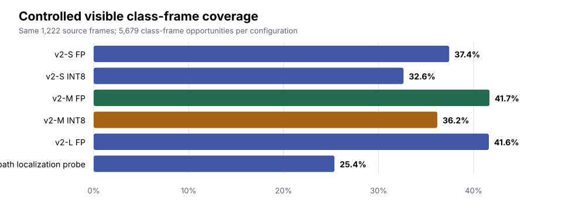
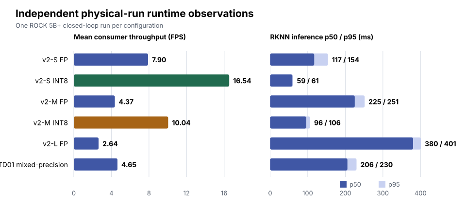
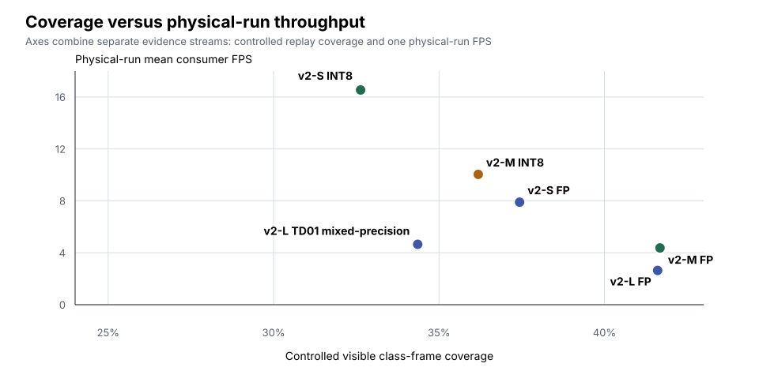
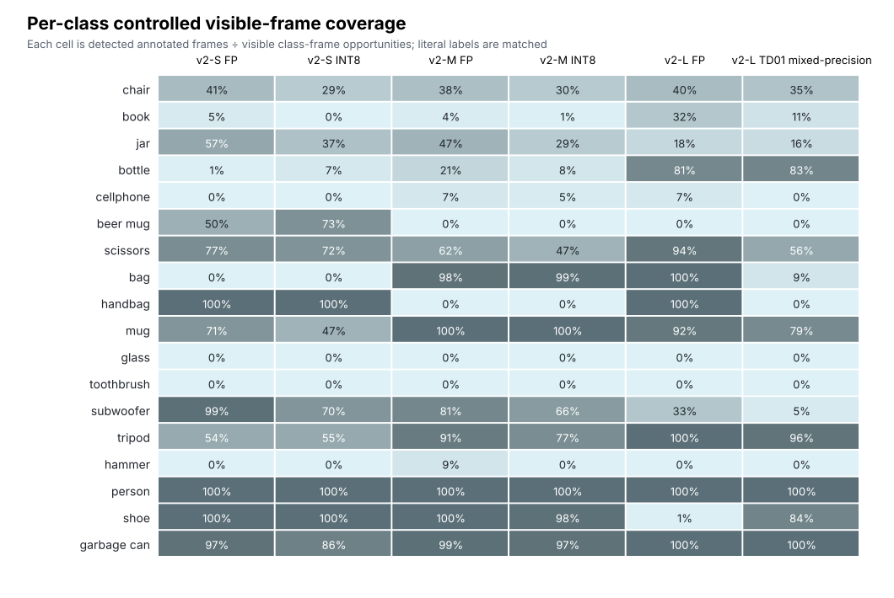

Six-Model Detector Comparison¶
Experimental design¶
This report keeps two evidence sources separate.
| Evidence source | Design | What it supports |
|---|---|---|
| Controlled replay | Each configuration consumes the same 1,222 source frames. Vocabulary, score threshold (0.25), NMS IoU threshold (0.45), and post-processing are fixed. | A controlled, frame-aligned presence/visibility comparison in this scene. |
| Physical trials | One independent closed-loop ROCK 5B+ run per model. | Runtime and system observations from six case studies. |
The controlled metric is visible class-frame coverage. A class-frame opportunity is one frame in which a manually annotated class is visible. The 19 inclusive class-interval sets sum to 5,679 class-frame opportunities. Multiple classes can be visible in one source frame, so the same 1,222 unique source frames legitimately create 5,679 opportunities.
Key findings¶
- v2-M FP has the highest controlled coverage: 2,367 / 5,679 class-frame opportunities (41.7%).
- v2-S INT8 has the highest observed physical-run throughput: 16.54 FPS.
- v2-M INT8 is the observed middle-ground configuration: 36.2% controlled coverage and 10.04 FPS in its independent physical run.
- All six physical trials completed with zero target-loss episodes.
Visual comparison¶
Controlled replay¶
Controlled replay video: a frame-aligned view of the same source sequence for every configuration. It provides qualitative context for the controlled coverage metrics.

| Configuration | Detected / class-frame opportunities | Coverage |
|---|---|---|
| v2-S FP | 2,126 / 5,679 | 37.4% |
| v2-S INT8 | 1,853 / 5,679 | 32.6% |
| v2-M FP | 2,367 / 5,679 | 41.7% |
| v2-M INT8 | 2,055 / 5,679 | 36.2% |
| v2-L FP | 2,363 / 5,679 | 41.6% |
| v2-L Hybrid | 1,440 / 5,679 | 25.4% |
Every configuration detected person on all 293 annotated visible frames.
Independent physical trials¶
Physical-trials grid: one independent closed-loop run per configuration.
All six physical trials completed successfully with zero target-loss episodes.
| Configuration | Mean consumer FPS | Inference p50 / p95 | Source-age p95 | Memory-used p95 |
|---|---|---|---|---|
| v2-S FP | 7.90 | 117.28 / 153.95 ms | 181.50 ms | 2955.47 MB |
| v2-S INT8 | 16.54 | 59.19 / 60.76 ms | 95.48 ms | 2959.68 MB |
| v2-M FP | 4.37 | 225.12 / 251.43 ms | 282.81 ms | 3349.19 MB |
| v2-M INT8 | 10.04 | 96.22 / 106.47 ms | 139.42 ms | 2999.90 MB |
| v2-L FP | 2.64 | 380.25 / 400.98 ms | 438.76 ms | 3306.73 MB |
| v2-L Hybrid | 4.65 | 205.55 / 229.90 ms | 262.32 ms | 4157.62 MB |

Combined view, with evidence boundary preserved¶

The scatter plot is a deployment-trade-off view, its x-axis comes from controlled replay while its y-axis comes from one independent physical run per configuration.

The heatmap makes the class-level variation visible.
Engineering interpretation¶
v2-M FP narrowly leads v2-L FP in this controlled scene (41.7% versus 41.6%). For the separate physical case studies, v2-S INT8 has the highest observed throughput, while v2-M INT8 provides the strongest observed coverage/throughput middle ground. Relative to their FP counterparts, v2-S INT8 improves inference p50/p95 by 1.98×/2.53× and throughput by 2.09×; v2-M INT8 by 2.34×/2.36× and 2.30×; v2-L Hybrid by 1.85×/1.74× and 1.76×. v2-L Hybrid is faster than v2-L FP but has lower controlled coverage and the highest observed memory use.
Success times span 50.5–57.8 s, much less than the 59.19–380.25 ms inference p50 range. That is consistent with scan/control timing also mattering in this bounded trial.
Reproducibility and data quality¶
The charts are generated by
render_docs_assets.py
from tracked replay JSONLs, replay provenance,
visibility annotations,
and the tracked physical-run summary table.
It also creates the physical-run video poster directly from the tracked grid
video. Regenerate them with:
python3 studies/detector_comparison/scan_final_recal/evidence/render_docs_assets.py
The retained comparison report, replay JSONLs, physical-run summary, and checksums remain available for detailed provenance. Rerendering the replay video also requires the retained source stream. Apart from the public v2-L FP RunBundle, physical timing values are summaries checked against retained local bundles and are not independently recomputable from a public clone.
Limitations¶
This is one-scene presence/visibility evidence, not mAP, bounding-box recall, or general detector accuracy. Controlled replay is not latency benchmarking. The physical trials are unreplicated case studies and cannot establish statistical significance or causal performance differences. Physical-run detections must not be treated as controlled accuracy comparisons.